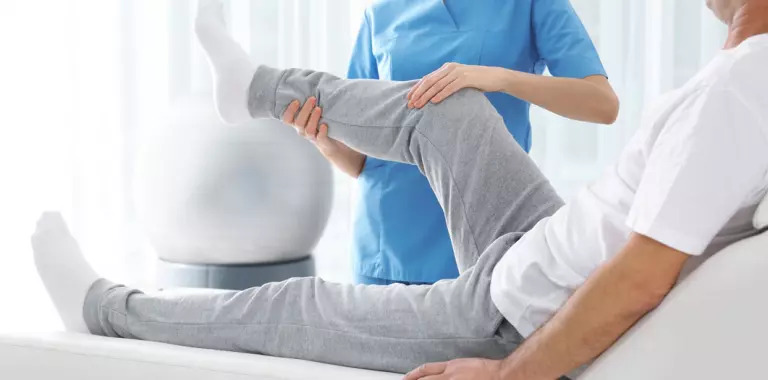
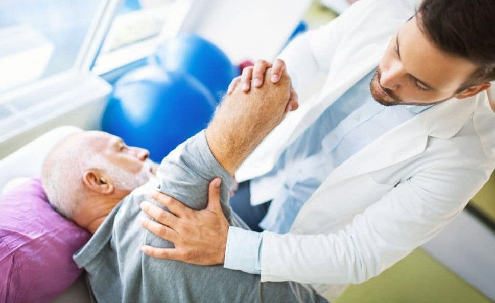
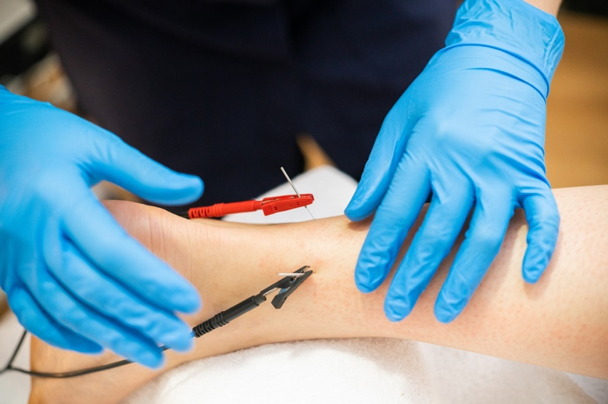
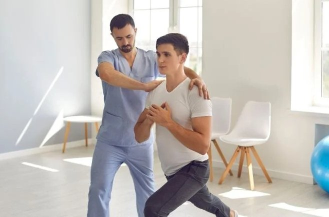

- Kinesiología Neuromotora (trastornos centrales y periféricos).
FISIOTERAPIA
- Magnetoterapia.
- Onda Corta.
- Electroanalgesia.
- Electroestimulación.
- Ultrasonido.
- Infrarrojo.
- Láser.


REHABILITACIÓN NEUROKINÉSICA
- ACV.
- Parkinson.
- Alzheimer.
- Prálisis Facial Periférica.
- Lesiones Medulares.
- Ela.
- Esclerosis Múltiple.
TERAPIAS NO CONVENCIONALES
- Acupuntura.
- Punción Seca.
- Ventosas.
- Electropuntura.


PSICOMOTRICIDAD
- Niños: Estimulación Temprana, Trastorno del Déficit Atencional, TEA.
- Adolecentes.
- Gerontes: Enfermedades Crónicas y Oncológicas.
En BIENESTAR SALUD contamos con equipamiento de última generación y profesionales altamente capacitados, con el único propósito de brindar una atención de excelencia en pos de garantizarle al paciente una pronta recuperación en un marco de empatía, atención y respeto.-
Somos Bienestar
Salud
Ofrecemos un servicio
distinguido en Fisioterapia
y Kinesiología.
KINESIOLOGÍA TRAUMATOLÓGICA
Kinesiología respiratoria, pediátrica y neonatal.
Contamos con materiales para el control de los parámetros vitales pre y post sesión de
KTR, sistema de aspiración abierta para patologías más complejas, gabinetes
individuales, aparatología de última generación y un gimnasio con variedad de elementos.
Las maniobras kinésicas convencionales se complementan con la posibilidad de tapping,
liberación miofacial, esferodinamia, punción seca, acupuntura.
REHABILITACIÓN PERSONALIZADA
...Nuestro establecimiento tiene la capacidad de recepcionar pacientes
con enfermedades neurológicas centrales y periféricas (ACV, PARKINSON, ALZEHIMER, PFP,
ELA, ESQUELOROSIS MÚLTIPLE, LESIONES MEDULARES,SINDRÓMES VESTIBUALES ETC). Se brinda una
atención personalizada de 45 minutos, con trabajo cuerpo a cuerpo, kinesiólogo –
paciente. Las instalaciones brindan la posibilidad de recepcionar pacientes en camilla
y/o silla de ruedas.
REHABILITACIÓN NEUROKINÉSICA
El trabajo neurokinésico se realiza sobre la base de CONCEPTO BOBATH,
contamos con los aditamentos necesarios para beneficiar la progresión ascendente del
paciente. Cada una de las terapias según el requerimiento de la patología del paciente,
quedan registradas en una ficha evaluativa donde se plasman los parámetros iniciales del
paciente. Finalizadas las sesiones indicadas por el médico tratante se realiza una
reevaluación para dejar constancia de la evolución del paciente en el proceso de su
tratamiento.
UBICACIÓN
Buenos Aires 487 (4000) S. M. de Tucumán - Tucumán, Argentina.